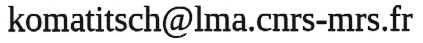

Last update: January 2017
Version
française de cette page
I am fond of genealogy. My father's ancestors lived mainly in Slovenia, in the south of Austria (Kärnten / Carinthia), in Germany (Saarland), and in Moselle and Meurthe-et-Moselle in France. My mother's ancestors lived mostly in Finistère in Bretagne (Brittany - France).
My entire online database is here
If the country is not indicated after the name of a town or village, it means that this town or village is in France, in which case the number in parentheses indicates the French "département" (i.e. region) it belongs to.
If you find some errors in the database, or have some information that could be added to it, or if you study the same villages, please do not hesitate to email me at:

You can write
to me in English, French or Spanish.
(also in Italian or German if needed).